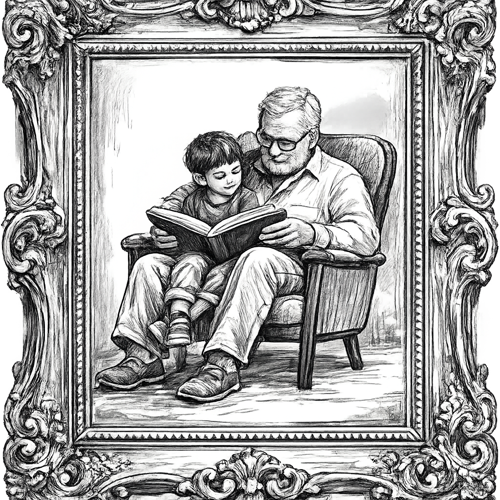

Thrive Path
How Thrive Path creates value for learners, schools, families, and society.

Long-term view
Inspired by the reference site’s use of emotionally weighted illustration, this placement gives the page a calmer and more reflective visual anchor.
Stronger identity, greater resilience, clearer direction, better study habits, and more realistic career understanding.
More engaged students, stronger school culture, better visibility of learner growth, and a more inspiring institutional story.
A clearer view of their child’s strengths and growth, and greater meaning in the family’s investment in education.
Young people who are better able to think, adapt, contribute, and participate in more resilient communities and economies.
Impact Logic
The investor and policy concepts describe Thrive Path as more than a motivational program. It is meant to generate trackable outputs, learner-level outcomes, school-level outcomes, and broader system value.
Schools onboarded, learners enrolled, sessions delivered, and participation levels tracked across each implementation cycle.
Improvement in self-awareness, communication, digital literacy, study habits, and confidence in navigating opportunities.
Teacher and administrator feedback, engagement indicators, and integration of Thrive Path practices into school culture.
Longer-term signals around pathways into work, entrepreneurship, further learning, and reduced learner drift after school.
Theory of Change
Long-Term Ambition
The source material links impact to a broader shift: more young people moving into decent work, entrepreneurship, further relevant training, and community problem-solving with stronger confidence and less drift.